Авито Сигнал: макеты
По видео Сони 30.10: сначала макеты, потом код. 7 досок, 30 экранов, всё на одном сценарии «зимние кроссовки до 5 000». Экраны листаются вбок, нажмите на экран, чтобы рассмотреть.
Что нужно выбрать команде
Главное - вариант ленты обсуждений. Остальное можно решить одним сообщением: «А / Б».
Совет: 3 «Вопрос и лучший ответ» как основа: польза видна без клика, сразу понятно, что люди помогают выбрать. Сверху блок «Сейчас обсуждают» из варианта 5, чтобы алгоритм поднимал самое интересное (02:13)
К экранам →Совет: А: Сигнал вместо Избранного, Избранное переезжает в Профиль. Объявления и Сообщения остаются на своих местах (11:41)
К экранам →Совет: А + кружок из Б: переписка живёт в Сообщениях (близкие закреплены сверху), а в Сигнале появляется кружок «Аня просит помочь», только когда кто-то просит. Одно место для чатов, Сигнал не перегружен
К экранам →Совет: А по умолчанию, Б для моделей с 10+ отзывами: Яндекс тоже включает ИИ-сводку отзывов от 10 отзывов
К экранам →Лента обсуждений в Сигнале
Сигнал открывается сразу на обсуждениях. Во всех вариантах одно и то же: крупный цепляющий заголовок, нет «горит», мягкие метки вместо «ждут ответа», кружок «Мои запросы», подсвеченная категория, где вы знаток, кнопка «Спросить» всегда внизу. Отличается только подача. Выберите 1-2 варианта, дальше доведу экраны внутри.
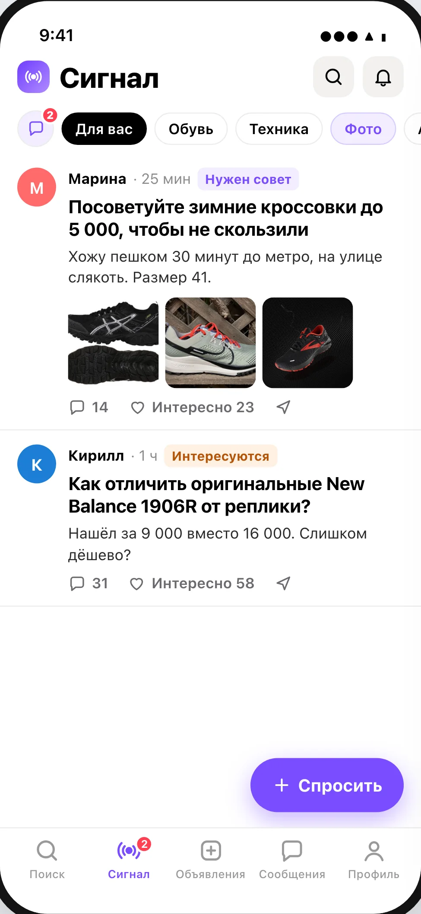
Как обсуждения в Threads: аватар, заголовок, фото вещей, ответы и «интересно». Читается быстрее всего. Фото есть не у каждого вопроса.
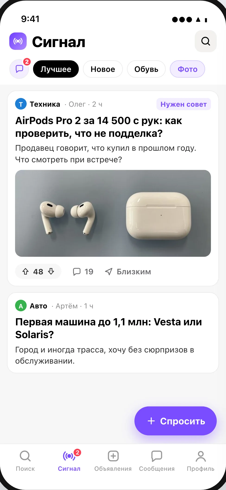
Как на Reddit: тема, крупная обложка, голоса «полезно». Лучшее поднимается само. Помещается 1-2 вопроса на экран.
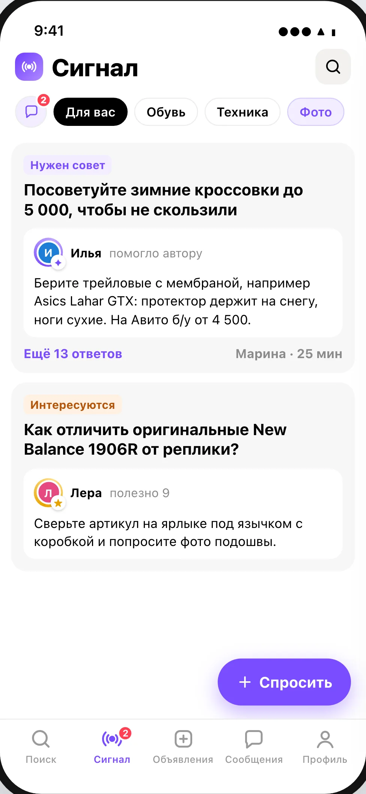
Под заголовком сразу ответ знатока. Польза видна без клика, знатоки на виду. Длиннее карточки, меньше вопросов на экране.
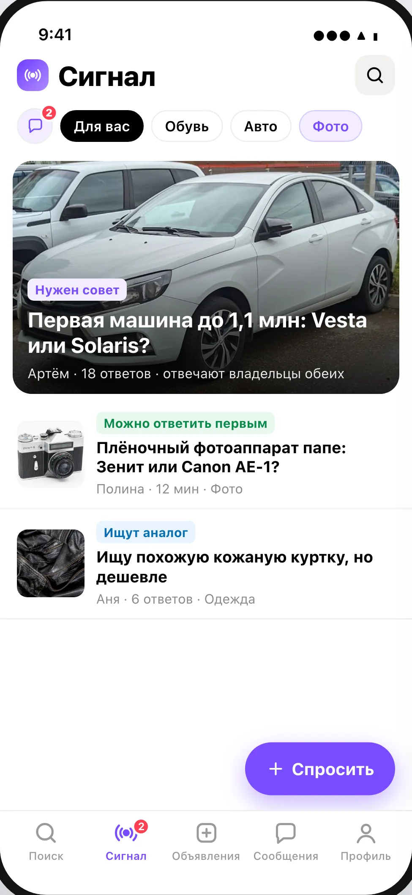
Самое интересное крупно, остальное компактно. Цепляет с первого экрана. Нужен хороший алгоритм для обложки.
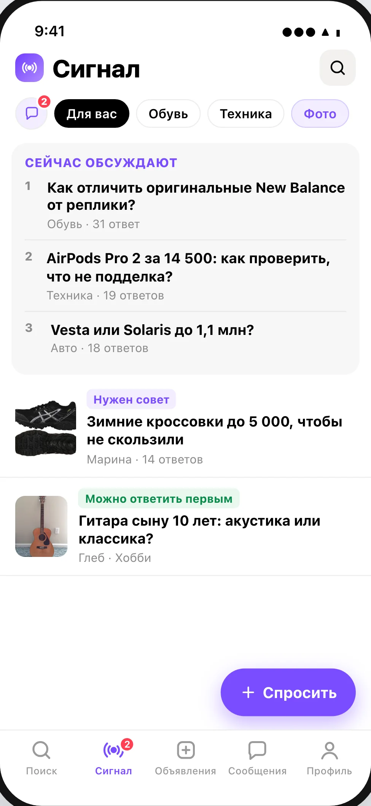
Как тренды в X: сверху короткий топ, ниже лента. Видно, о чём говорят прямо сейчас. Топ похож на старое «горит», нужен мягкий тон.
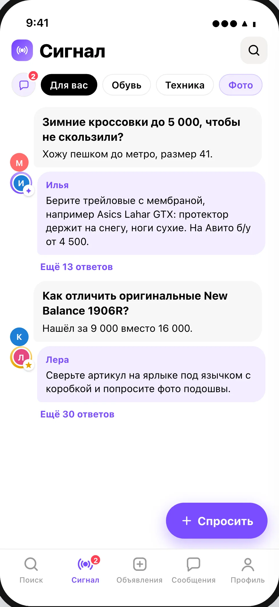
Вопрос и лучший ответ пузырями, как в мессенджере. Знакомо, ощущается живым разговором. Легко спутать с чатами в «Сообщениях».
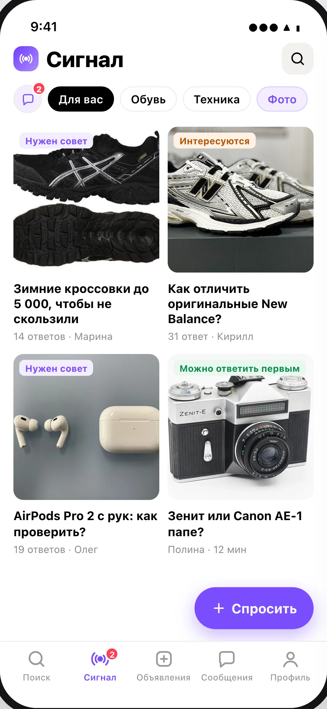
Обсуждения выглядят как рекомендации Авито. Самый «родной» для Авито вид. Мало текста, вопрос надо открыть, чтобы понять.
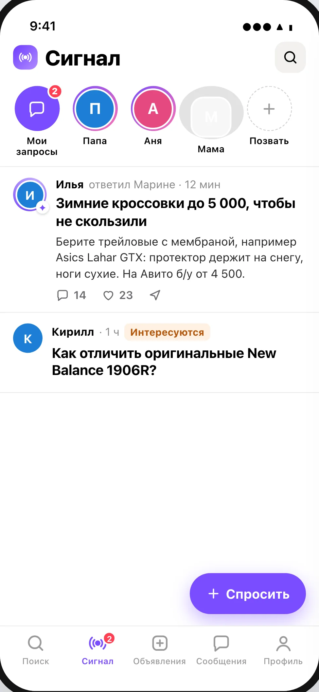
Сверху «Мои запросы» и близкие, как сторис, ниже лента. Свои ответы и близкие в один тап. Без близких ряд пустой, нужен «Позвать».
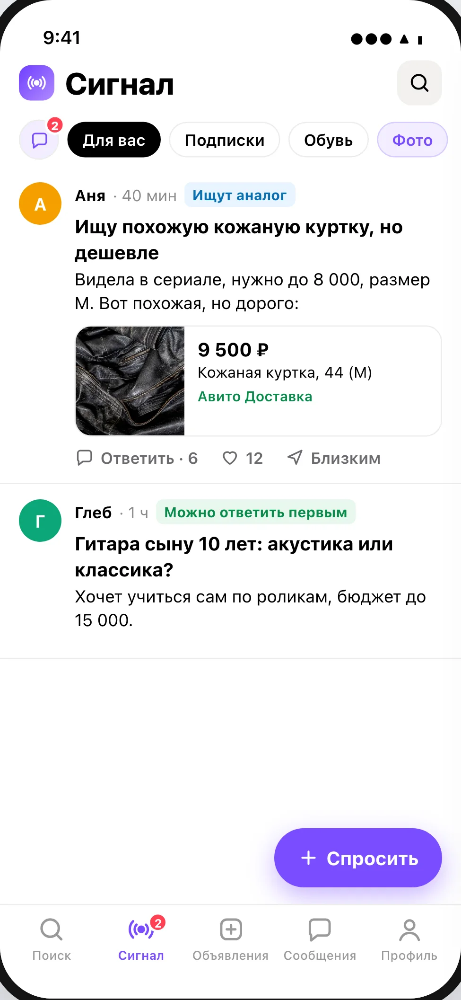
Вопрос сразу с карточкой вещи, как пост с вложением. Прямой путь к покупке, растут контакты. Плотнее по визуалу.
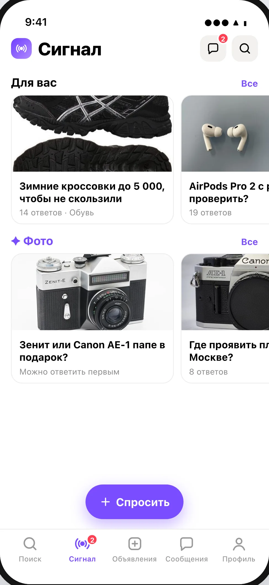
Горизонтальные полки: для вас, ваша тема, остальные. Знаток сразу видит свою категорию. Меньше «залипания», больше выбора.
Где живёт Сигнал
Сейчас 6 вкладок, всё налезает друг на друга. Оставляем 5, как в Авито сейчас. Объявления и Сообщения - главное в Авито, Сигнал не должен с ними конкурировать. Три варианта, рекомендую А: на место Избранного, а Избранное переезжает в Профиль.
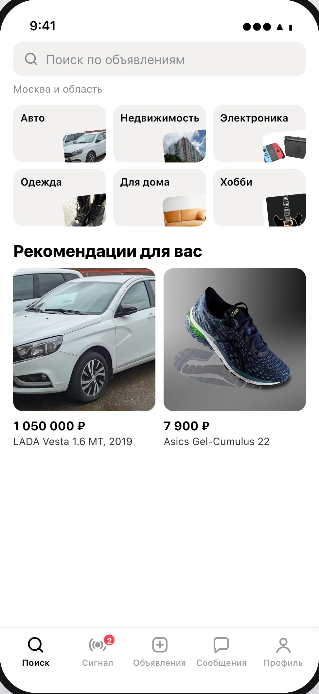
Пять вкладок: Поиск, Сигнал, Объявления, Сообщения, Профиль. Объявления и Сообщения на своих местах, Сигнал виден с любого экрана. Люди привыкли к Избранному внизу, нужна подсказка «Избранное теперь в Профиле».
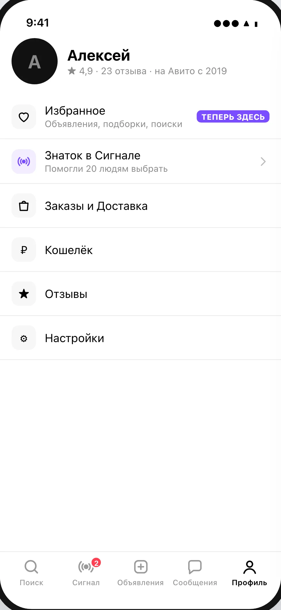
Избранное первым пунктом профиля с меткой «Теперь здесь». Рядом пункт «Знаток в Сигнале». Профиль Авито не переделываем, только добавляем пункт.
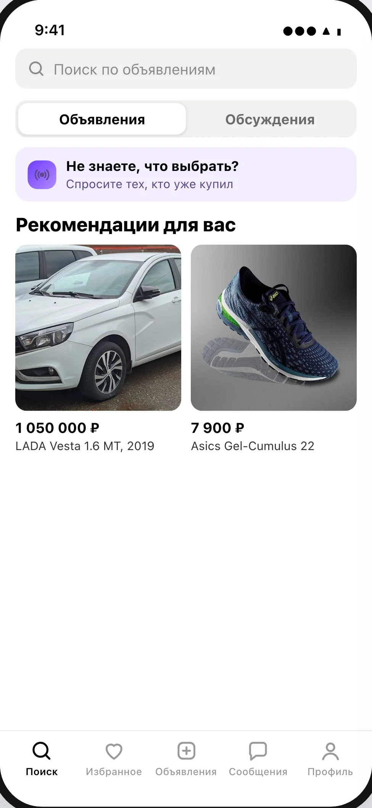
Нижняя панель как сейчас, на главной переключатель «Объявления / Обсуждения». Ноль новых вкладок, люди и так начинают с поиска. Сигнал легко не заметить, меньше заходов.
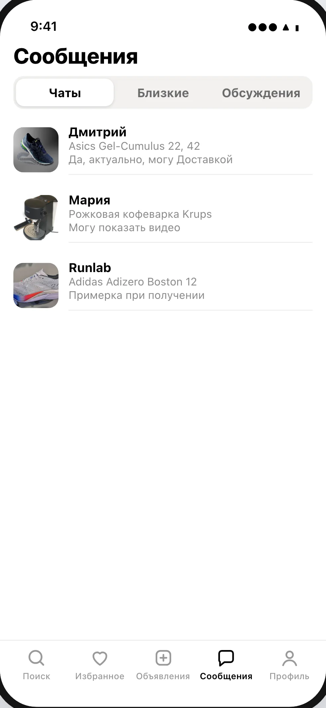
Вкладки «Чаты / Близкие / Обсуждения». Общение с близкими рядом с чатами, где оно и так идёт. Конкурирует с перепиской с продавцами, это главное в Авито.
Спросить совета за два касания
Как в Threads: только поле для текста и «Кого спросить». Категорию и бюджет Ави понимает из текста сам. После отправки экран читается сверху вниз: сначала ответы (или «пока не ответили»), ниже подборка Ави, ещё ниже похожие обсуждения. «Позвать круг» и «Готово» убраны: круг выбирается до отправки, назад - свайпом.
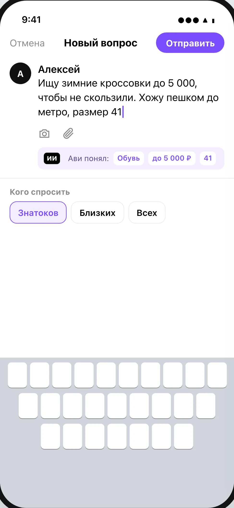
Пишете как в мессенджере, Ави сам ставит категорию, бюджет и размер (можно поправить касанием). Кого спросить: знатоков категории, близких или всех.
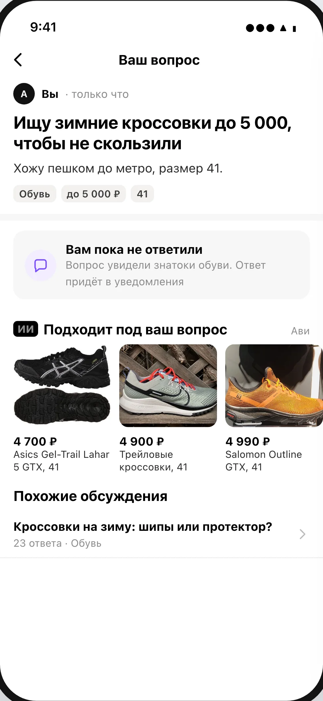
Не пустой экран: понятно, что вопрос ушёл, ниже подборка Ави и похожие обсуждения. Каждый скролл уводит глубже в Сигнал.
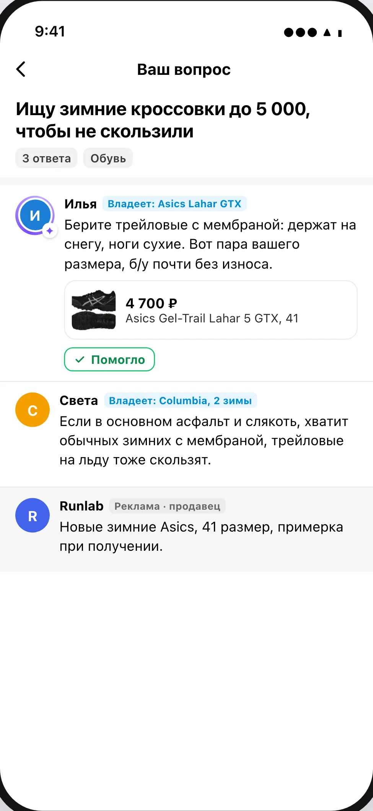
Ответы как ветка комментариев. Сверху владельцы и знатоки, продавцы ниже с пометкой «реклама». Подборка Ави и похожие обсуждения уезжают ниже ответов.
Обсуждение и ответ
Обсуждение выглядит как ветка комментариев (Reddit, комментарии в Telegram). Знаток отмечен кольцом вокруг аватара, а не надписью. Ответ пишется одной строкой внизу, объявление прикрепляется через «+»: из Избранного, из недавно просмотренных или кнопкой «Подобрать», которая открывает ленту под запрос человека.
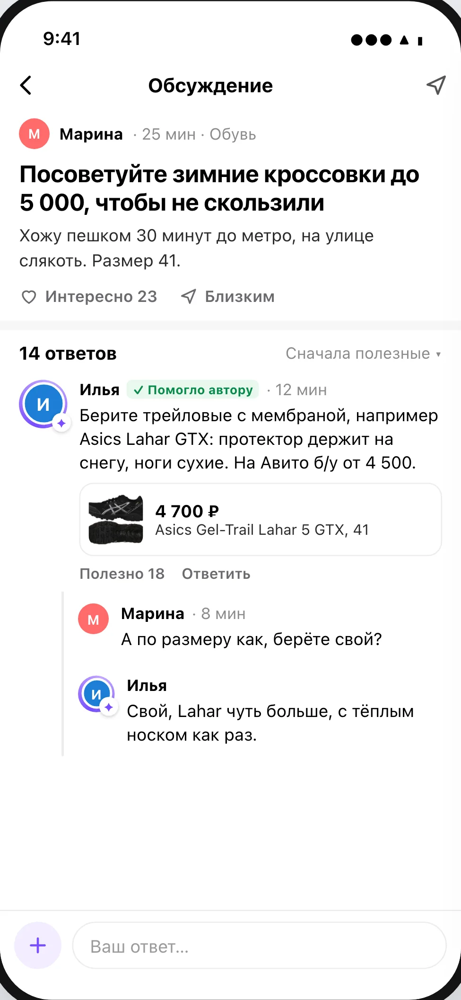
Сверху то, что помогло автору, с ответами на ответы. Кольцо вокруг аватара: фиолетовое у знатока, золотое у эксперта. Ответ пишется прямо здесь.

Объявление прикрепляется по желанию. «Подобрать» открывает ленту уже с фильтрами из вопроса, «Из избранного» - то, что вы сами сохраняли.

Знаток листает объявления, уже отфильтрованные по вопросу, и отмечает подходящие. Так ответ сразу ведёт к покупке.
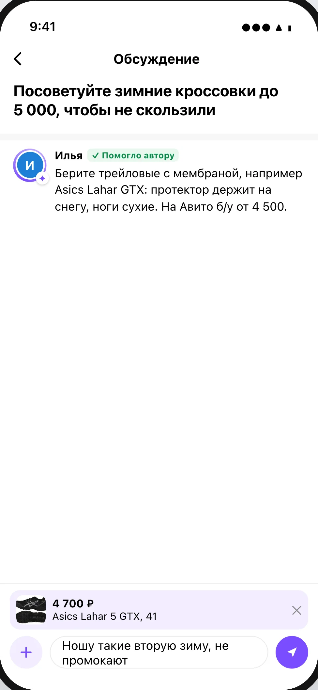
Текст и прикреплённая карточка уходят одним сообщением. Если прикрепить своё объявление, ответ получит пометку «реклама».
Близкие вместо групп
Групп по интересам нет: только семья и друзья, которых вы позвали сами по ссылке. Просьба близкого открывается мини-чатом, как комментарии в Telegram: можно переписываться и пересылать объявления и обсуждения. Свайп остаётся только здесь, как мелочь: быстро разобрать, что прислал папа. Ниже два места для близких на выбор: в Сообщениях (А) или в Сигнале (Б).
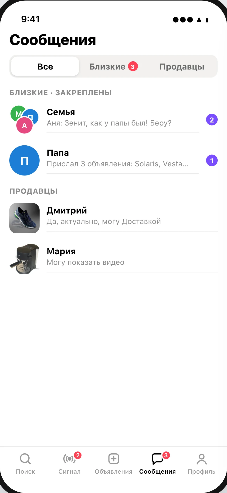
Чаты с близкими закреплены сверху и отделены от продавцов. Переписка там, где её и ищут, Сигнал не перегружен. Сообщения становятся длиннее.
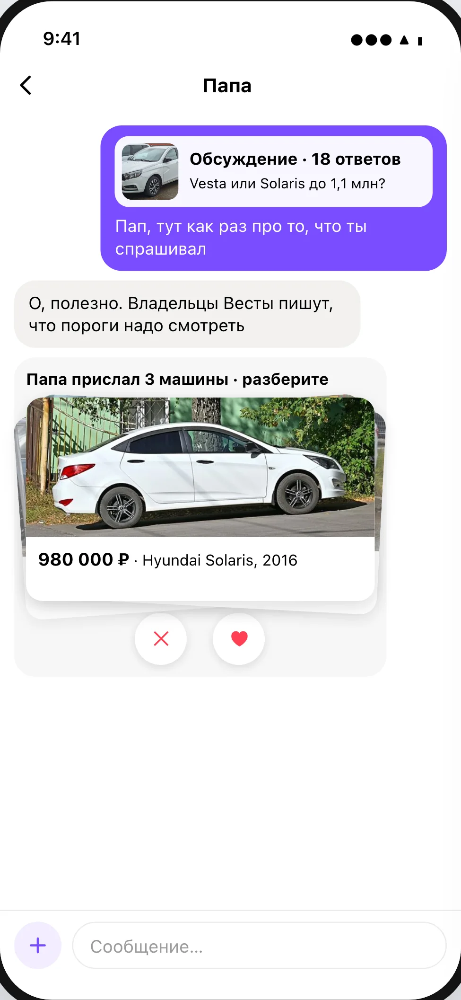
Пересылаем друг другу обсуждения и объявления. Что прислал папа, можно разобрать свайпом «нравится / мимо» прямо в чате, он увидит результат.
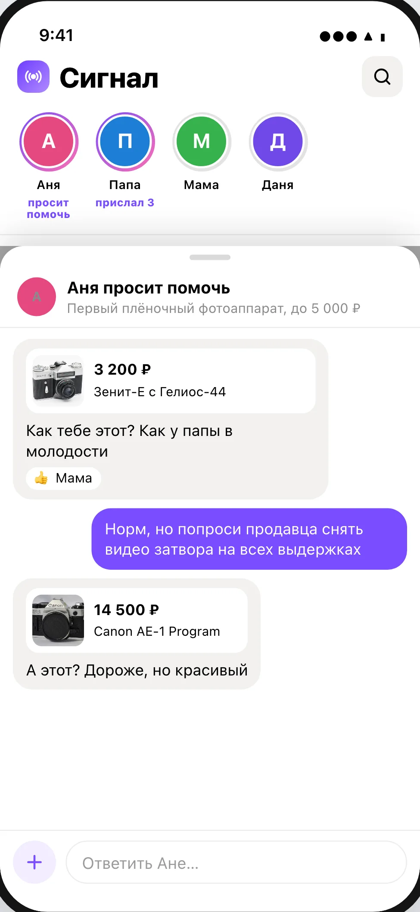
Кружки близких сверху ленты, тап открывает мини-чат по просьбе. Всё про выбор в одном месте. Ещё одно место с перепиской, кроме Сообщений.
Опыт владельцев, который не мешает покупке
Блок спокойный: серый фон, одна цитата одинаковой высоты, сменяется сама, как подсказки с отзывами в Лавке. Главное на экране остаются цена, продавец и кнопки «Написать» и «Купить». Вместо «Спросить владельцев» одна строка с обсуждением этой модели и ссылка «Начать обсуждение» (продавцу и так можно написать в личку).
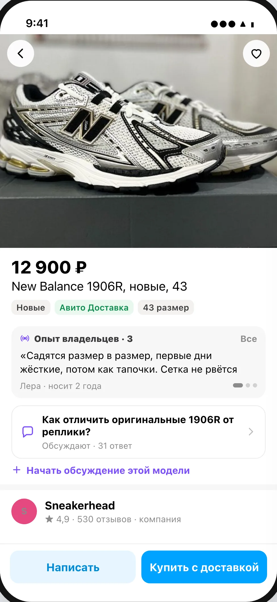
Фиксированная высота в две строки, точки показывают, что отзывов несколько. Ниже одна строка с обсуждением модели. Не спорит с ценой и кнопками.
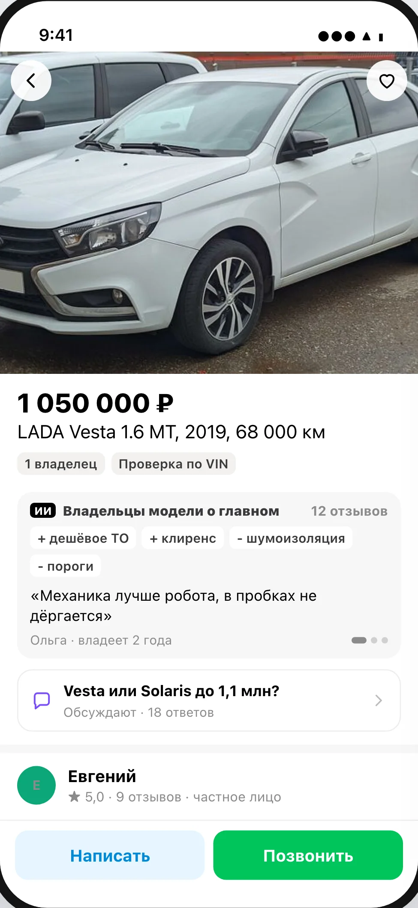
Плюсы и минусы модели по отзывам владельцев и одна цитата. Так Яндекс показывает сводку отзывов в Маркете, от 10 отзывов. Работает и для авто, и для техники.
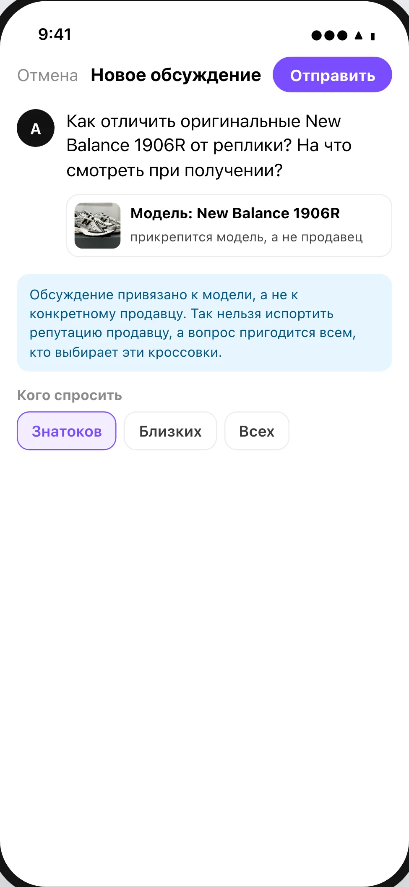
Вопрос о модели в один шаг. Это закрывает риск, который заметила Соня: нельзя написать гадость про конкретного продавца, к вопросу прикрепляется модель.
Знаток: за что дают и что это даёт
Вкладка «Знаток» внутри существующего профиля Авито. Статус свой в каждой категории и растёт только от отметок «помогло» и покупок по совету, а не от числа комментариев: так нечего накручивать. Знак - кольцо вокруг аватара (серое, фиолетовое, золотое), без надписей в ответах. Чтобы ответ получил каждый, вопросы без ответа уходят знатокам категории и дают двойной прогресс.
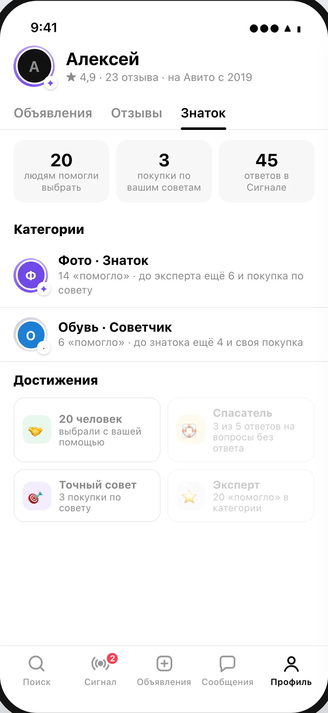
Профиль не переделываем, добавляем вкладку рядом с Объявлениями и Отзывами. Здесь же «вы помогли 20 людям» и достижения, а не в ленте обсуждений.
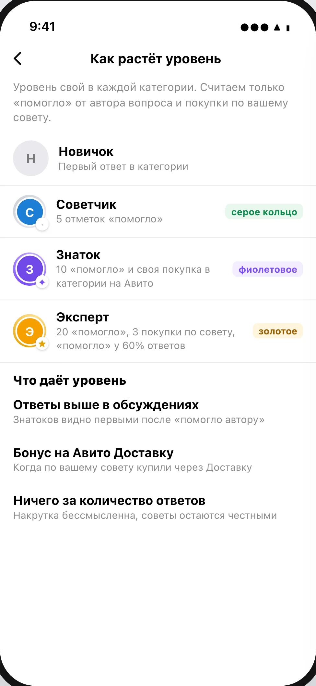
Статус видно по кольцу вокруг аватара, как значки авторов отзывов на маркетплейсах. Пороги считаются от «помогло», а не от числа комментариев.
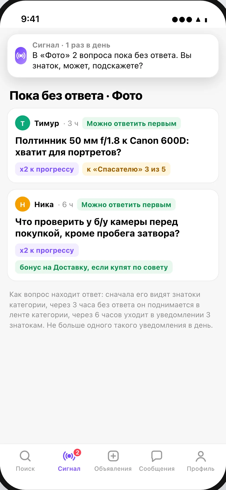
Вопросы без ответа идут знатокам категории по лесенке: лента, затем мягкое уведомление. За первый ответ на такой вопрос двойной прогресс и шаг к «Спасателю».
Чек-лист и системы
Что сказала Соня и где это в макетах
- 00:14Нижняя панель переполнена, сделать аккуратно, как в Ozon02: пять пунктов, Сигнал вместо Избранного
- 00:46, 17:09Сигнал открывается сразу на обсуждениях, свайпы не первыми01: все 10 вариантов
- 00:54-01:30Визуал как у Reddit, X, Threads, чтобы хотелось провалиться01: варианты 1 (Threads), 2 (Reddit), 5 (тренды X)
- 01:33, 02:47-03:17Убрать «горит» и оранжевые надписи, чисто и лаконично01: «горит» нет нигде
- 01:40Кнопка должна всегда быть внизу01: закреплённая кнопка «Спросить»
- 01:56-02:11Крупный цепляющий заголовок: тема обсуждения01: заголовок главный элемент карточки
- 02:13-02:38Алгоритм поднимает самое интересное наверх01 вариант 5 и раздел «Что наверху ленты» ниже
- 03:30-04:08Как каждый получит ответ, награды за ответ на старый вопрос07 экран 3 и раздел «Вопросы без ответа»
- 04:09-04:49За что дают «знатока», как у Ozon и WB07 экраны 1-2 и раздел «Знаток»
- 04:50«Знаток категории» не надписью, а вокруг аватараКольцо вокруг аватара на 01, 03, 04, 07
- 05:03Ответы выглядят как обычное обсуждение04 экран 1: ветка с ответами на ответы
- 05:14-05:44«Ждут ответа» напрягает, нужно мягче01: «Нужен совет», «Ищут аналог», «Интересуются», «Можно ответить первым»
- 05:50-06:27Убрать категории и бюджет, оставить «Кого спросить», создать за два касания03 экран 1: только текст, категорию и бюджет понимает Ави
- 06:31-06:52Подборка Ави сама после отправки, поле как в Threads03 экраны 1-2
- 06:56, 08:04Убрать «Позвать круг» после отправки03: круг выбирается до отправки
- 07:07-07:50После отправки: ответы, ниже подборка Ави, ещё ниже похожие обсуждения03 экраны 2-3: «Вам пока не ответили», затем подборка и похожие
- 07:51«Готово» не нужно, назад свайпом03: кнопки нет
- 08:14-08:38Уведомления в целом нормальноНе меняли
- 08:48-09:51Прикрепить объявление через «+»: из Избранного или «Подобрать» в ленте под запрос04 экраны 2-4
- 09:54-10:28«Ваши запросы» кружком, чтобы быстро открыть свои вопросы01: кружок с числом новых ответов слева от «Для вас»
- 10:28-11:20«Вы помогли 30 людям» в профиль, решённые в ленте не нужны07 экран 1
- 11:20-11:41Профиль Авито уже есть, добавить вкладку «Знаток»07 экран 1: вкладка рядом с Объявлениями и Отзывами
- 11:41-12:30Объявления и Сообщения не уходят на второй план02 вариант А
- 12:34-13:03Избранное можно перенести в профиль02 экран 2: Избранное в Профиле с меткой «Теперь здесь»
- 13:18-13:51Группы убрать, только семья и друзья05: «Близкие вместо групп»
- 13:51-14:47«Аня просит помочь» кружком, мини-чат как комментарии в Telegram05 экран 3
- 14:47-15:20Близкие в Сообщениях или в Сигнале, подумать, как лучше05 экраны 1 и 3, рекомендация выше
- 15:31-16:13Реалистичные запросы и логичные ответыВсе доски на одном сценарии с кроссовками
- 16:48-17:0910 вариантов вида обсуждений, это главное01
- 17:19-17:33«Фото, вы знаток» выглядит неудачно, просто подсветить категорию цветом01: категория знатока подсвечена фиолетовым
- 17:41-19:29Опыт владельцев: одна высота, сменяется сам, не ярко, не отвлекает от покупки06 экран А
- 19:45-20:38Начать обсуждение из карточки, но не навредить продавцу06 экран В: к вопросу прикрепляется модель, а не продавец
- 20:38-21:22Одна строка «обсуждают» и «начать обсуждение» вместо «Спросить владельцев»06 экран А
- 22:12-25:35Свайпы убрать, оставить в чате с близкими и в подборке, стрелка «отправить своим»05 экран 2, кнопка «Близким» на 04 экран 1
Как работают системы: знатоки, вопросы без ответа, лента, свайпы
Знаток
- Уровень свой в каждой категории: можно быть знатоком фото и новичком в беге.
- Новичок: первый ответ в категории.
- Советчик: 5 отметок «помогло», серое кольцо.
- Знаток: 10 «помогло» и своя покупка в этой категории на Авито, фиолетовое кольцо.
- Эксперт: 20 «помогло», 3 покупки по совету и «помогло» у 60% ответов, золотое кольцо.
- Считаем только «помогло» от автора вопроса и покупки по совету. За число комментариев ничего не даём, поэтому накручивать бессмысленно.
- Что даёт уровень: ответы выше в обсуждениях и бонус на Авито Доставку, когда по совету купили через Доставку.
- Пороги - наше допущение для прототипа, на пилоте подбираем по данным.
Вопросы без ответа
- Новый вопрос сразу видят знатоки категории: у них он выше в ленте.
- 3 часа без ответа: вопрос поднимается в ленте категории с меткой «Можно ответить первым».
- 6 часов без ответа: мягкое уведомление трём знатокам категории. Не больше одного такого уведомления в день на человека.
- За первый ответ на такой вопрос: двойной прогресс уровня и шаг к достижению «Спасатель» (5 таких ответов).
Что наверху ленты
- Темы из регистрации и того, что человек смотрит на Авито.
- Свежесть и сколько людей нажали «Интересно».
- Знатоку: вопросы его категории, где ещё нет ответа.
- Сверху один блок «Сейчас обсуждают» (вариант 5) вместо «горит».
Свайпы
- Как отдельная механика убраны: по словам Сони (22:12-23:34), это не социальная механика и продажи не двигает.
- Остались мелочью там, где Соня их оставила: разобрать в чате, что прислал папа, и проголосовать в совместной подборке («мимо» или «нравится»).
- Идея на финал (23:12): отдельно предложить Авито свайпы в обычной ленте рекомендаций.
Факты и источники
- YandexGPT пишет сводку отзывов о товаре в Яндекс Поиске и Маркете, если у товара от 10 качественных отзывов. ichip.ru, rozetked.me
- Wildberries ставит товару метку «Выбор покупателей»: рейтинг от 4,7, от 40 отзывов, товар в наличии. finratings.kz
- Wildberries разбирает отзывы нейросетью: за последние 3 месяца или 100 последних отзывов. finratings.kz
- «Золотые крылья» у авторов отзывов на Ozon в открытых источниках не нашли, поэтому знак у нас свой: кольцо вокруг аватара.
- Лавка (отзывы внутри подсказок ИИ, Избранное в профиле) - со слов Сони, не проверяли.